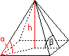

Trigonometrie - Aufgaben 2
1.
Ein Lichtstrahl fällt unter dem Einfallswinkel α = 54,7° auf eine a = 15 mm dicke Glasplatte und dringt unter dem Ausfallswinkel β = 32,6° in das Glas ein. Beim Austritt dreht sich der Vorgang um, sodass der Lichstrahl wieder dieselbe Richtung hat. Um wie viel mm wurde er parallel versetzt? Hinweis: Ein/Ausfallswinkel werden zum Lot hin gemessen.
2.
Aus einer Augenposition a = 2,5 m über dem Wasserspiegel sieht man das Licht einer Lampe unter dem Höhenwinkel α = 20° und ihr Spiegelbild im Wasser unter dem Tiefenwinkel β = 41°. Wie hoch über dem Wasserspiegel befindet sich die Lampe? Hinweis: Ein Spiegelbild liegt genausoweit hinter dem Spiegel, wie das Original davor.
3.
Von einem a = 300 m hohen Hügel aus sieht man einen quer zur Blickrichtung vorbeifließenden Fluss unter dem Sehwinkel α = 3,5° und das diesseitige Ufer unter dem Tiefenwinkel β = 32,1°. Wie breit ist der Fluss?
4.
Ein Stahlkeil mit dem Winkel α = 19° wird mit der Kraft F = 1,7 kN in einen Holzblock getrieben. Wie groß sind die Spaltkräfte?
5.
Um zwei Riemenscheiben mit den Radien r1 = 25 cm, r2 = 67 cm und dem Achsenabstand a = 103 cm wird ein straff gespannter Treibriemen gelegt. Wie lang ist er?
6.

Von einer geraden quadratischen Pyramide kennt man die Höhe h = 7,9 m und den Winkel zwischen Seitenkante und Grundfläche α = 33,4°. Wie groß ist ihr Volumen und der Winkel zwischen Seitenfläche und Grundfläche?
7.
Eine Kurbelwelle dreht sich von 0° (Kolben am äußeren Totpunkt) auf α = 50,8°. Um welche Strecke wird der Kolben dabei bewegt, wenn der Kurbelradius r = 8 cm und die Länge der Schubstange a = 75 cm ist?
Ergebnisse:
1. 6,7 mm
2. 6,10 m
3. 72,00 m
4. 5,15 kN
5. 512,4 cm
6. 755 m3; 43°
7. 3,2 cm